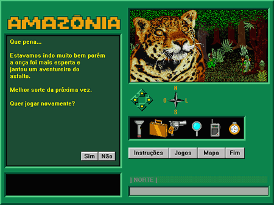
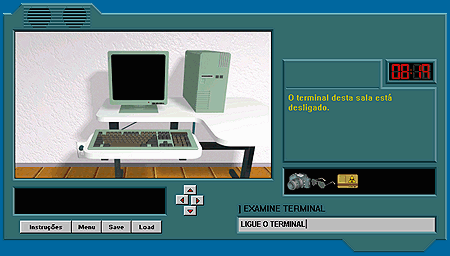
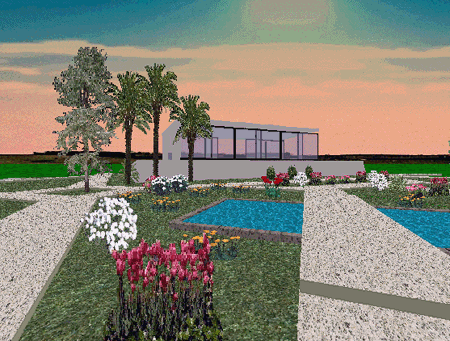
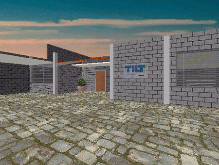

|
|
|
Entrevista com Renato Degiovani
|
Renato Pontes Degiovani, 43 anos, mora atualmente em Orlândia-SP com sua esposa e seus três garotos. Nos anos oitenta, com suas inspiradoras matérias sobre adventures e criação de jogos, ele se tornou o guru dos jovens aficcionados em informática, que esperavam afoitos à cada número da revista Micro Sistemas nas bancas. Quinze anos depois, Renato fala com exclusividade à equipe do Borolândia.
Equipe Borolândia: Como você entrou na revista Micro Sistemas, e qual era seu papel lá dentro?
Renato Degiovani - Segui o caminho completo: leitor, colaborador, acessor técnico, diretor técnico e editor geral. Mandei um programa para eles publicarem. Gostaram e me chamaram para conversar - queriam saber se eu tinha mais. Mostrei o Aventuras na Selva e daí em diante é história. A revista Micro Sistemas e em especial a editora (na época a Alda Campos) foram as primeiras pessoas que conhecí que valorizaram os jogos em computador. Quase 20 anos depois ainda são poucas, na imprensa, que fazem isso.
Porque você saiu da Micro Sistemas mais tarde, e o que levou a revista ao seu fim?
Fiquei lá por uns 15 anos. Então resolvi mudar do Rio e não poderia continuar como editor. Ainda colaborei uns tempos, mas depois perdí contato. Não sei o que aconteceu com a revista e nem porque ela terminou. Acho que foi problema de mercado.
Sente saudades daquela época?
Não muito - hoje é bem mais divertido e os computadores.... uau!
Como é ter sua própria revista?
Tem um lado bom, que é poder fazer as coisas como realmente queremos (nem tudo na MS era como eu queria que fosse). Mas por outro lado temos responsabilidades extras e elas tomam tempo precioso que eu gostaria de dedicar aos jogos.
Quando e como surgiu a idéia de fazê-la?
Sempre testei produtos digitais, revistas em fita K7, disquetes, CDrom, etc. Em 94 experimentei fazer um fórum da MS, numa rede de BBS. Mas essas coisas não eram entendidas pelo pessoal de publicidade, então eu não tinha apoio para levá-las adiante. Em 95, quando decidi sair do Rio, pesou também na decisão o fato da internet estar se alastrando por todo o país e para fazer o que eu queria fazer, não precisaria morar mais num grande centro.
É um hobby, ou o objetivo era ganhar dinheiro com ela?
Não é hobby, mas minha opção de trabalho. Larguei tudo para me dedicar ao projeto da TILT.
Você tem uma equipe trabalhando com você hoje?
O trabalho de manutenção da TILT é bem pequeno e eu mesmo faço. Tenho muitos colaboradores, que ajudam nos projetos, nas idéias e principalmente nas críticas, mas não tenho uma equipe fixa.
E os jogos que você faz hoje, é um hobby ou é para ganhar dinheiro?
São parte do projeto TILT, logo são feitos com uma visão profissional. Prefiro dizer assim pois o objetivo não é ganhar dinheiro. Ganhar dinheiro é uma consequência do trabalho e não a meta principal.

O adventure Amazônia leva o jogador para os mistérios e perigos da selva.
|
Porque você disponibiliza de graça na internet, alguns jogos e o editor de adventures, depois do trabalho que deu para fazê-los?
Porque acho que essa é a melhor maneira de fazê-lo. Transformá-los em produto padrão só iria acarretar mais trabalho e o resultado final seria desastroso, como comumente costuma ser. Assim, gratuitamente, muito mais pessoas podem usufruir desses produtos. Como eu disse, o dinheiro não é a meta principal.
Sabendo que hoje em dia, os jogos mais difundidos são os de 3D em primeira pessoa e os de estratégia em tempo real, porque você continua trabalhando tanto com adventures?
É um equívoco pensar que o mundo gira em torno dos jogos 3D ou de estratégia. Há um fantástico universo que não aparece, porque os meios de comunicação pouco se dão ao trabalho de pesquisar. Hoje em dia as publicações funcionam na base de press release e assessoria de imprensa. Quem tem (os grandões naturalmente) aparece sempre. Então dá a impressão que de só esses mais conhecidos é que existem. Façam o teste: pesquisem por jogos, na internet e verão quanta coisa bacana existe.
Você pretende ou gostaria de fazer algum jogo 3D ou que use outro engine diferente de adventure?
3D não é jogo, mas um tipo especial de interface. Estamos trabalhando há um ano num adventure 3D, mas os problemas são muito complexos para serem solucionados em pouco tempo. Ainda não existe um único adventure 3D (realmente 3D) no mercado - isso mostra como é complexo. Fazer um 3D para atirar, correr e coletar coisas, quando passa por cima, é relativamente fácil.
Quais as fontes de referência/inspiração que você usa para fazer um novo jogo?
O dia a dia. Nossas histórias, lendas, cultura. Acho que podemos encontrar tudo aqui mesmo, sem ter que importar os temas.

Cena do jogo Angra-I. Explorar lugares e coletar objetos faz parte de todo adventure.
|
Quais as maiores dificuldades encontradas?
Convencer as pessoas que jogo não é brincadeira. É algo sério, feito para divertir, distrair, ensinar, etc. No Brasil não se dá muito valor às criações cultuais.
Você está envolvido no projeto de algum jogo atualmente? Algum grande projeto?
Sim. Um grande projeto (inédito inclusive em âmbito mundial) que é levar o adventure legítimo para o universo da internet. Jogar em tempo real.
Como surgiu a idéia do Editor de Adventures? Você queria criar uma ferramenta para você fazer os jogos que faz, ou ele foi feito para que outras pessoas aficcionadas por criação de jogos o usassem?
Todos os programas que fiz foram para servir de ferramenta para meus jogos. Desde o Graphos III até o Editor.
Você construiu Orlandia Virtual, que pode ser acessada com o Active Worlds. Com que objetivo ela foi construida? O que você reserva pra ela?
Ela foi planejada para ser um grande jogo (adventure) online, mas não deu muito certo. O público que frequenta o AW é muito desligado dessas coisas e o pessoal mais ativo prefere ficar longe dos chats. Além disso, o mundo virtual exige máquina pesada. Concluímos que nossas idéias estavam (e ainda estão) muito adiante da realidade da rede. Quem sabe daqui uns anos possamos finalmente ver esse projeto funcionando a pleno vapor.

|
Cena de um dos muitos lugares agradáveis de Orlândia Virtual
|
O que você acha das atuais decisões do governo sobre os jogos que devem e os que não devem ser comercializados no Brasil?
Isso tudo é uma grande besteira, coisa de quem não tem o que fazer.
Há alguns anos atrás, pudemos observar uma não muito sutil explosão de jogos que usavam engine de estratégia em tempo real. Algum tempo depois, foi a vez dos 3D em primeira pessoa. Você acha que algum novo tipo de engine está para explodir a qualquer nomento? Você imagina como seria?
Não sei. Acho que a bola da vez é a internet - jogos em rede. Não estou falando de jogos que podem ser jogados em modo multiplayer, mas jogos projetados para esse universo.
Como você imagina os jogos do futuro? Digamos daqui a 10 anos?
É muito tempo. Não saberia dizer nem como serão no ano que vem.
Com as criações de recentes jogos nacionais que estão até sendo exportados, tais como Incidente em Varginha II e OutLive, por exemplo, que são jogos de ótima qualidade, você acha que o Brasil está despertando para um mercado que ele ainda não podia competir?
Como esforço de criação e para marcar presença no mercado, não deixa de ser válido e louvável, mas não há a menor chance disso dar certo, ou seja, de termos um mega-sucesso como os jogos mais badalados. Por todas as razões possíveis e imagináveis (economia, política de exportação, etc). O que pode acontecer é um ou outro destaque em decorrência principalmente do tema. O Incidente em Varginha chamou a atenção lá fora, por causa do tema - que para eles é novidade. Mas não escapa (pelo menos aqui no Brasil) de uma comparação direta com os "Quakes". Sei que é uma constatação dura, mas não há igualdade de condições na competição com os estrangeiros. Achar que vamos ganhar no mercado global "no grito" ou que a disputa será honesta denota apenas desconhecimento dos mecanismos do mercado.
Fazer jogos para competir lá fora é, no meu entender, uma espécie de suicídio. É o mesmo que formar uma banda de rock aqui, tocar aqui e querer fazer sucesso lá fora. Quem quer fazer isso, deve, em primeiro lugar, sair do país e ir morar nos Estados Unidos, perto dos grandes fabricantes e onde de fato se cria tecnologia (além dos custos envolvidos serem muito menores). Aproveitar o que eles tem de bom para oferecer. Concorrer lá e de certa forma esquecer o Brasil, como mercado.
Temos que fazer aqui uma espécie de tropicália, bossa nova ou ainda de sertanejo, de pagode, de axé, de samba, etc. Coisas que não existem lá fora, para que possamos entrar na disputa com alguma vantagem. Mas o pessoal mais bitolado só enxerga mesmo aquilo que já era, que já foi sucesso e já inundou o mercado. Nos colocamos sempre de forma atrasada neste assunto. As pessoas preferem tentar repetir as fórmulas que já deram algum resultado, do que buscar resultados novos.

|
Em Orlândia Virtual tem até a redação virtual da revista TILT online
|
O que você teria a dizer ao pessoal que gosta de assuntos relacionados à criação de jogos, e que desejam criar um jogo mas não sabem como?
Que estudem, leiam, participem. Não desistam com facilidade. Mas, acima de tudo, fazer, fazer e fazer.
Mais alguma coisa que você gostaria de dizer aos aficcionados em adventures ou criação de jogos?
Sim, estamos lançando um servidor de adventures que vai dar o que falar. É só ficar plugado na TILT.
|
A equipe do Projeto Borolândia agradece
a atenção e a paciência. Valeuuu!! =)
|
|